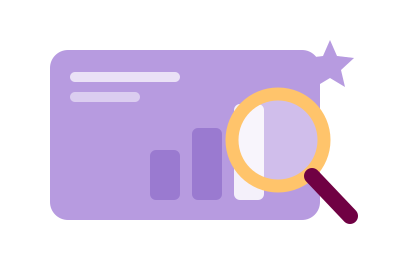
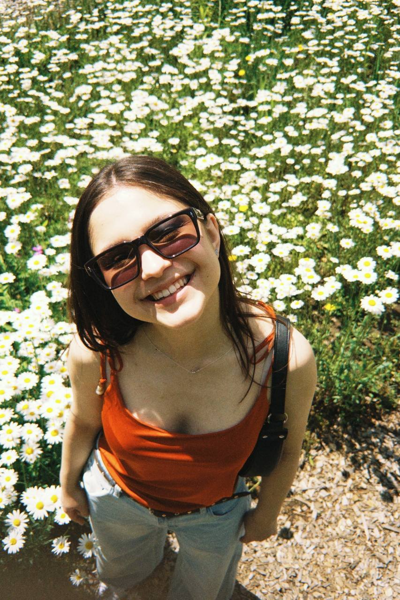
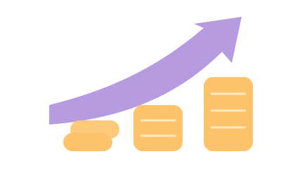
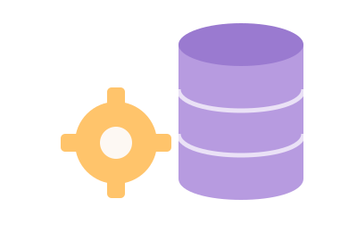
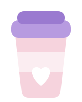

Научная работа об ИИ в бизнесе
Исследовала, какие бизнес-процессы и функции персонала можно передать искусственному интеллекту, на примере международного банка.
Подробнее →Учусь анализировать данные, описывать бизнес-процессы и находить точки роста.

Учебные проекты, которыми я горжусь

Исследовала, какие бизнес-процессы и функции персонала можно передать искусственному интеллекту, на примере международного банка.
Подробнее →
Строю имитационную модель инвестиционного проекта в Excel: макрос, расчёт чистой приведённой стоимости и реальный кейс.
Подробнее →
Разрабатывала структуры баз данных: ER-модели, JSON-схемы и запросы в Access.
Подробнее →Всё, с чем работала на практике
Считаю модели в Excel: оптимизация через «Поиск решения», имитационное моделирование и макросы.
Создаю таблицы и связи, строю запросы выборки и параметрические запросы.
Рисую ER-диаграммы и схемы бизнес-процессов в нотации EPC.
Верстаю адаптивные страницы: Flexbox, Grid, медиазапросы. Этот сайт сделан именно так.
Проектирую структуру NoSQL-баз в формате JSON и описываю её диаграммами.
Нахожу и извлекаю данные по шаблонам в Excel и Word.
Публикую сайты в интернете прямо из репозитория.
Свяжитесь со мной, и я с радостью расскажу больше о себе и своих проектах ♡

© 2026 Кира Толкачёва